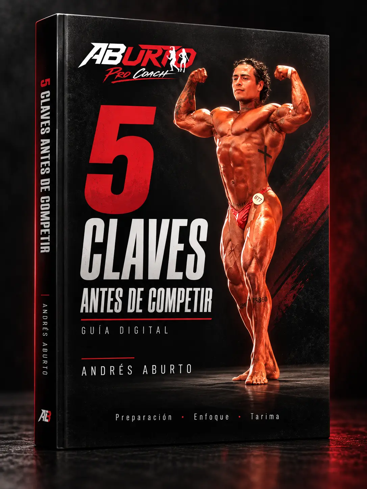
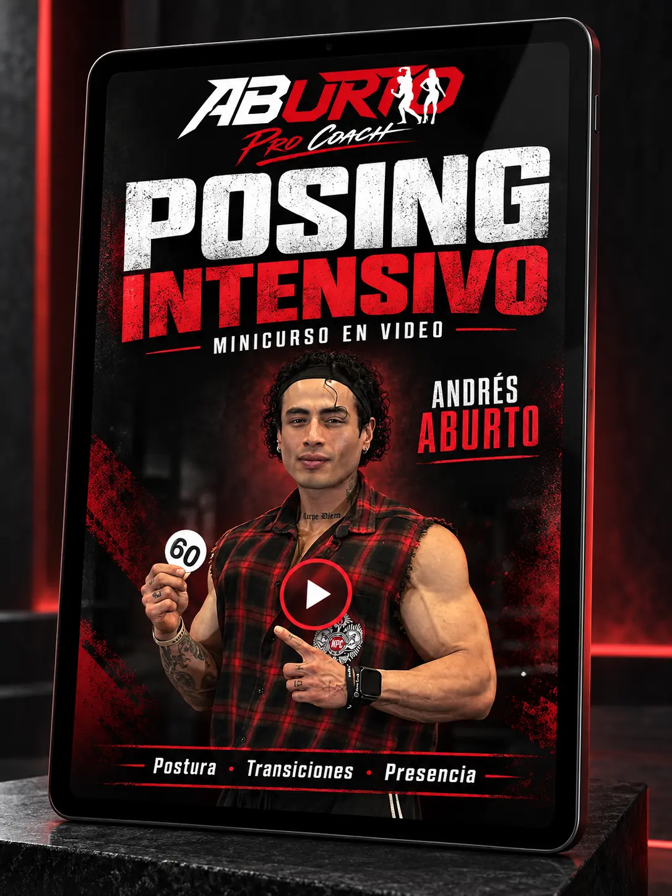
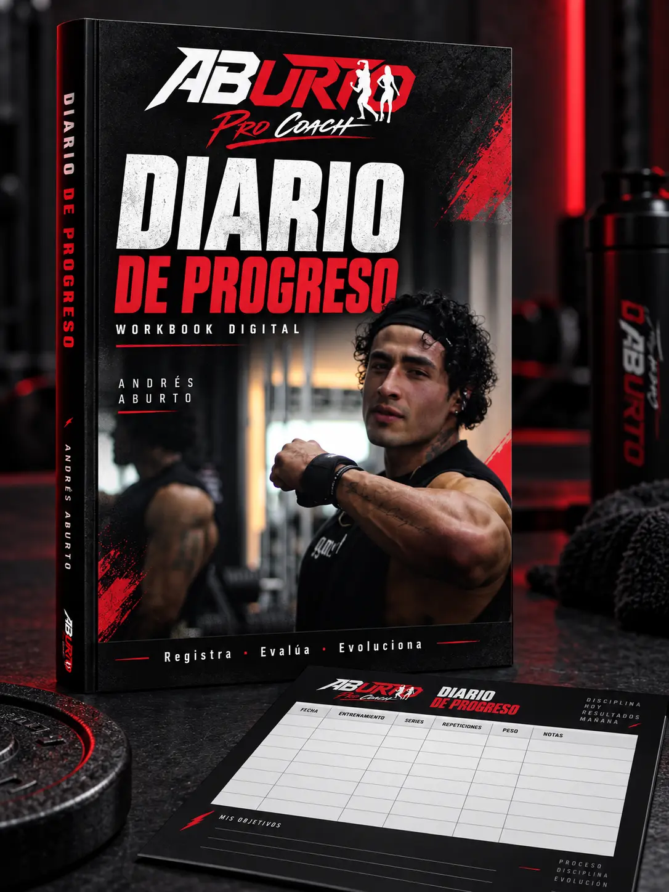

ENTRENAMIENTO
CON DIRECCIÓN.
Planificación orientada a objetivos, técnica, progresión y contexto individual.
Ver servicios ↗Entrenamiento, nutrición deportiva y preparación competitiva con dirección. Descubre el siguiente paso adecuado para tu experiencia y tu objetivo.
Entrenamiento, nutrición y presentación se integran dentro de cuatro servicios concretos. Elige uno directamente en la tienda.
Planificación orientada a objetivos, técnica, progresión y contexto individual.
Ver servicios ↗Orientación alineada con hábitos, composición corporal y proceso deportivo.
Ver servicios ↗Estructura, presentación y seguimiento para quienes buscan subir a tarima.
Ver servicios ↗La disciplina pesa más cuando tiene dirección, contexto y un sistema para medir el avance.

Atleta, preparador físico y nutriólogo deportivo. Su trabajo reúne entrenamiento, composición corporal, posing y preparación competitiva.
Objetivo, experiencia, contexto y disponibilidad.
Identificar el servicio o recurso que corresponde.
Aplicar con consistencia, técnica y seguimiento.
Evaluar evidencia, aprender y ajustar.

Entrenamiento, práctica y atención a los detalles que transforman una preparación en presencia.
Ver trayectoria en Instagram ↗Calcula tu punto de partida sin registro o activa gratis el Posing Lab con tu nombre y un medio de contacto.
La primera guía ya está lista. Los siguientes lanzamientos se mantendrán visibles para que puedas conocer lo que viene.

DisponibleUna ruta para ordenar preparación, posing, puesta a punto, logística y ejecución antes de subir a la tarima.

PróximamentePostura, transiciones y presencia mediante demostraciones, práctica y autoevaluación.

PróximamenteUn sistema de seguimiento para registrar sesiones, recuperación, tendencias y decisiones.
Selecciona el servicio que corresponde a tu objetivo. El asistente registrará tu elección y enviará el resumen al equipo para continuar.
01 / PersonalizadoPlan personalizado, seguimiento y dirección de acuerdo con tu objetivo y modalidad.
 02 / Online
02 / OnlineSistema online de entrenamiento con técnica, progresión, estructura y seguimiento.
03 / TarimaTrabajo por categoría para mejorar postura, transiciones, presencia y presentación.
 04 / Competition
04 / CompetitionEstructura y seguimiento para construir la condición, presentación y ejecución de tarima.
Precios en pesos mexicanos. El asistente confirma modalidad, registra tus datos y prepara el seguimiento; no sustituye la valoración inicial del coach.
Selecciona uno de los cuatro servicios o el producto digital. El asistente confirma tu objetivo, registra la solicitud y prepara el resumen para el equipo.
Desliza para conocer más experiencias.
“Está al pendiente durante el proceso, incluso el día del evento. Definitivamente volveré a considerarlo para pulir poses.”
“Dietas y entrenamientos que se incorporan a tu vida diaria y gustos, escuchando siempre y tomando en cuenta cada detalle.”
“He bajado 22 kilos y de grasa de 37.10 a 25.48. Lo recomiendo ampliamente.”
“No es un entrenador impositivo, realmente te escucha.”
“He tenido un avance en mi físico en solo un par de meses que pareciera ser de un año.”
“Si realmente te tomas en serio competir o llevar tu físico al siguiente nivel, estás en las manos correctas con Andrés.”
Extractos breves de reseñas públicas. En la ficha de BTS TV, selecciona “Leave a review” para compartir tu experiencia.